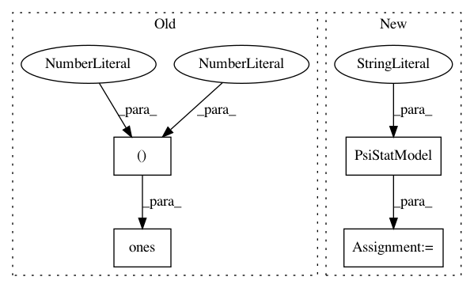

f01be172beee0e6df3b0447cccbfc4099cf34fdb,GPy/testing/psi_stat_tests.py,,,#,86
Before Change
m1 = PsiStatModel("psi0", X=X, X_variance=X_var, Z=Z,
M=M, kernel=kernel, mu_or_S=0, dL_=numpy.ones((1)))
m2 = PsiStatModel("psi2", X=X, X_variance=X_var, Z=Z,
M=M, kernel=kernel, mu_or_S=0, dL_=numpy.ones((1, 1, 1)))
After Change
M=M, kernel=GPy.kern.rbf(Q))
m3 = PsiStatModel("psi2", X=X, X_variance=X_var, Z=Z,
M=M, kernel=GPy.kern.linear(Q) + GPy.kern.bias(Q))
m4 = PsiStatModel("psi2", X=X, X_variance=X_var, Z=Z,
M=M, kernel=GPy.kern.rbf(Q) + GPy.kern.bias(Q))
In pattern: SUPERPATTERN
Frequency: 3
Non-data size: 4
Instances
Project Name: SheffieldML/GPy
Commit Name: f01be172beee0e6df3b0447cccbfc4099cf34fdb
Time: 2013-04-23
Author: ibinbei@gmail.com
File Name: GPy/testing/psi_stat_tests.py
Class Name:
Method Name:
Project Name: SheffieldML/GPy
Commit Name: 2c3a53b1740bfbb85a55d827788b1995176bb0b3
Time: 2013-04-23
Author: ibinbei@gmail.com
File Name: GPy/testing/psi_stat_tests.py
Class Name: Test
Method Name: testPsi2
Project Name: SheffieldML/GPy
Commit Name: 2c3a53b1740bfbb85a55d827788b1995176bb0b3
Time: 2013-04-23
Author: ibinbei@gmail.com
File Name: GPy/testing/psi_stat_tests.py
Class Name: Test
Method Name: testPsi1